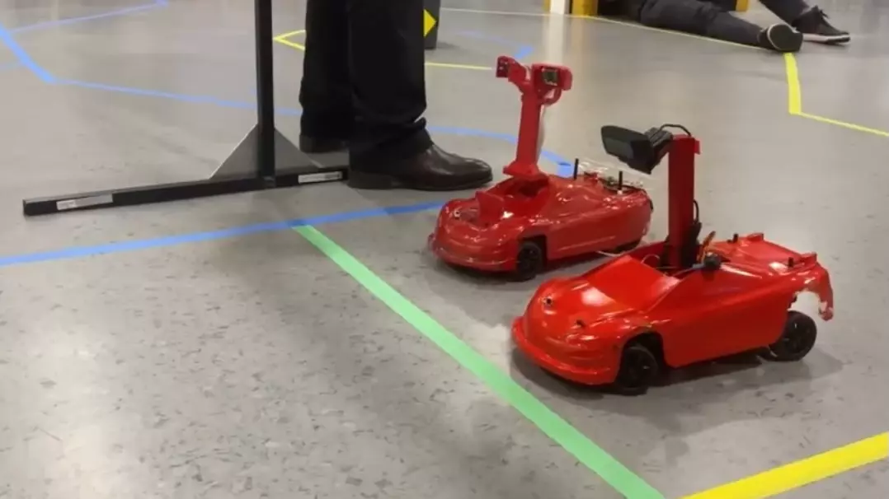
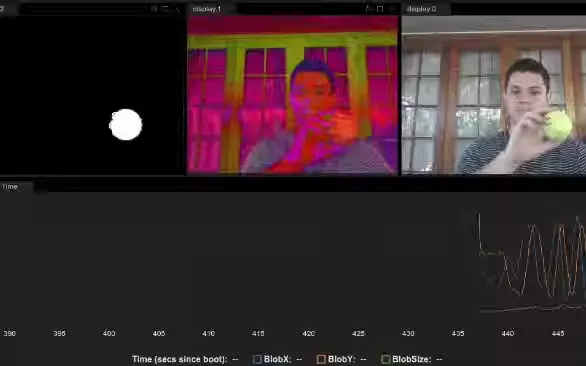
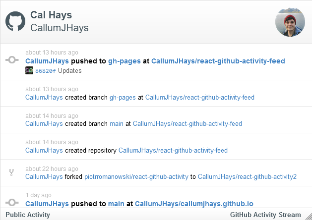
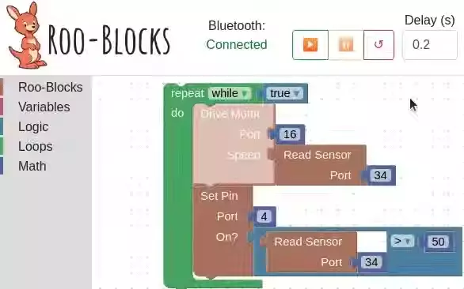
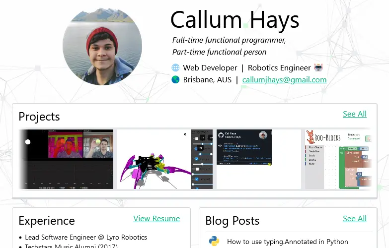

Home
Personal Projects
Blog
Resume
Personal Projects
Droid Racing Challenge
Droid Racing Challenge
Winning Entry for QUT's Droid Racing Challenge 2021.
Built using BDSim Realtime for all data processing, telemetry and high-level execution control.
Low-level ESC and Servo control done with Arduino.
YouTube Video
BDSim Realtime
BDSim Realtime
Real-time execution, remote monitoring and tuning of block-diagrams for streamlined modeling, simulation and control of dynamical systems in Python.
Built upon BDSim for honours thesis project; supervised by renowned robotics professor Peter Corke.
Hillary the Hexapod

Hillary the Hexapod
Remote control, live calibration and 3D visualisation for QUT Robotics Club's long-running hexapod project.
Consists of a React/Typescript app hosted by an async Python server via websockets.
React Github Activity Feed
React Github Activity Feed
Turn-key Github activity feed React component. Great for portfolio sites of sporadic open-source developers.
Built for this portfolio site, and to practice publishing a React component to NPM with all the bells and whistles.
Storybook Demo / Docs
Roo-Blocks
Roo-Blocks
Child-friendly electron app for controlling an ESP32 over Bluetooth using Blockly.
Built for mechatronics design 3 (EGH454)
Portfolio Site
Portfolio Site
Portfolio site you're looking at right now.
Built with Next.js/React and TailwindCSS using solely functional components and hooks.
Auto-deployed to github pages via Github Actions CI/CD.